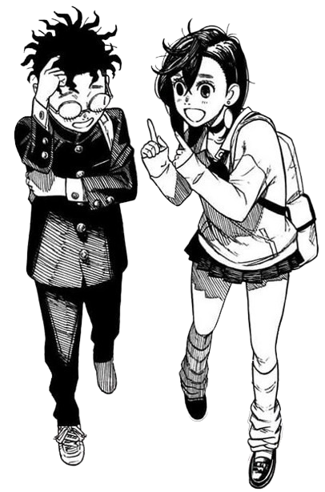

Song
Otonoke - Creepy Nuts
About
Greetings, fellow earthling! I’m Ken Takakura, and welcome to my blog dedicated to the occult and the bizarre! Miss Ayase suggested that it would be a fun idea to document all our strange findings in one place. What better way to do that than with a public blog? Ever since the Turbo Granny cursed me and snatched my family jewels, all sorts of paranormal and extraterrestrial occurrences have been happening to us. I’ll be sure to report on these experiences and include visual representations of the spirits or aliens that Miss Ayase and I must confront or befriend. Who would've thought starting a blog could be so fun!
